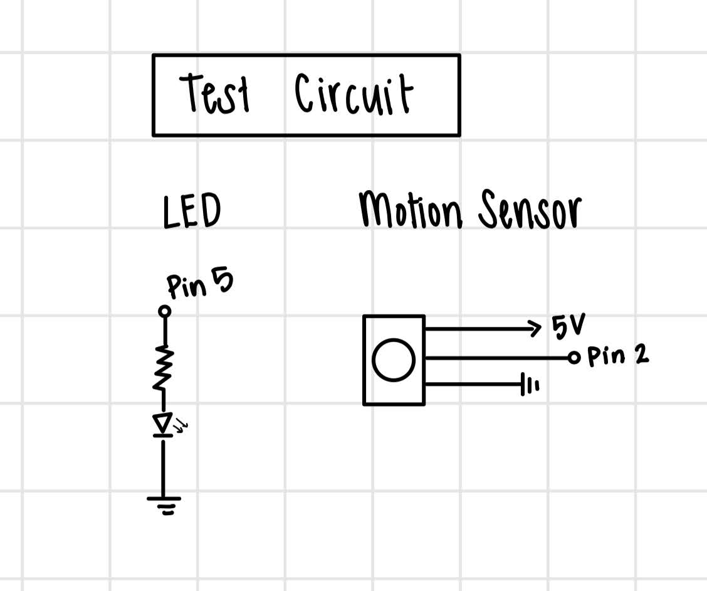

For my final assignment, I decided to create a motion-activated lamp shaped like Miffy, the cartoon bunny.
For this project, I wanted to make something that I would continue to use outside of this class. I love
having non-overhead lighting in my room, so I thought it would be fun to make a lamp. Additionally, I wanted to
try out new parts and use an external power source.
This led me to my final project, which is a motion-activated lamp that turns on and off when you wave your
hand in front of the sensor.
Bill of Materials
Translucent PLA Filament
Black PLA Filament
Arduino Uno
HC-SR501 PIR Sensor
6 Breadboard Jumper Wires
3 Female to male Dupont Wires
12V External power
Mosfet Transistor
LED Strip Lights
Two wire connectors
Blue LED (for testing)
220 Ohm resistor (for testing)
This is an image of my final circuit inside of the housing. The circuit is built on a small breadboard, connected
to the Arduino and to a 12V external power supply. The LEDs are wrapped around the pillar and the PIR Sensor sits on top.
The wires connected to the PIR Sensor run through the pillar since it is hollow.
Circuit Diagram
Here is the schematic for my circuit. It includes the PIR sensor which is connected to 5V, ground, and to pin 2.
The LED strip is connected to Vin, a mosfet transistor, and to ground. The mosfet transistor connects to pin 5.
If the system is on, the transistor is turned on, which allows power to flow to the LED strip, turning it on.
If the system is off, the transistor is turned off, which stops power from flowing to the LED strip, keeping it off.
Here is another schematic that shows how the circuit connects to the arduino and that the arduino is connected to
an external power source through the barrel jack.
Process
1. 3D Printing & Modeling
I started this project by 3D modeling. From previous experience, I knew that 3D printing, modeling, and printing
can be very troublesome and time-consuming. I knew that the Miffy body would be the most difficult thing to model,
so I found an existing piggy bank STL to use instead, since it was hollow and about the size I wanted. I used the
dimensions of the Miffy model to build the base and column. Additionally, I ensured that the base would fit the
Arduino inside. Thankfully, all of my initial prints were successful, but they took 17 hours total, which confirmed
my suspicion that I needed to start early.

2. Initial Code and Circuit
Before I started working in the “danger zone,” I created a simple circuit that used the PIR sensor, a single LED,
and a 220 ohm resistor. This allowed me to learn how to use the PIR sensor in a low-risk environment. It helped me
understand what the sensor detects as motion and how I should write the code so that waving your hand once would
turn the light on, and waving a second time would turn the LED off.
The code is relatively simple because the values from the PIR sensor either
detect “motion” (infrared) or don’t, meaning there were only two potential inputs I had to account for. As for the
code, I set the state of the LED to be a boolean value that was changed to its opposite every time motion was detected.
Then, using if statements, I assigned the boolean value to turn the LED on or off, depending on whether the state was
true or false.
I tested the code using Serial output and was relatively confident in the output. However, I still needed to change
the settings on the PIR sensor. This presented a significant challenge because I had to find just the right settings
for the potentiometers. They change how often the sensor tries to sense motion and the distance at which it will sense
motion.
I found that it helped to decrease the sensor’s “field of view” by putting it inside of Miffy, such that the sensor
faced the coin slot, the sensor would only detect motion through that slot and not other motion in the room. They
made it easier to test the settings.
3. The Danger Zone
Once I was confident that my code worked for the simple circuit, it was time to enter the danger zone. This involved
creating a more complex circuit to account for the LED strip and 12V external input. I had my table group and the
teaching team check over my circuit to ensure it worked. While the connections seemed to be correct and the LEDs
were lighting up, they were not following the code. I worked 1:1 with Paula in office hours to troubleshoot by using
serial output, changing the code, and swapping out physical parts of the circuit until we eventually determined that
the problem was my Arduino. It appeared that at some point, I had short-circuited my Arduino so that it was no longer
functioning properly. However, Paula was kind enough to give me another one, and once we ensured that everything was
connected properly, we tested it and found that the new Arduino worked.
4. Putting it All Together
Now that the circuit was working properly, it was time to start putting all of the pieces together. I originally
attempted to solder my circuit using the prototype expansion module, but I was not confident in my soldering abilities.
I eventually decided to pivot from soldering my final project because I was struggling to make solid connections and
was worried about damaging another part of my circuit. Additionally, my final project did not require soldering since
the entirety of the circuit would be contained within the housing, and the lamp would be largely stationary. Instead,
I used the two-way wire connectors to connect the LED strip to the breadboard.
For my final step, I put all of the 3D printing housing together, placing the circuit inside as shown in the concept
sketch. During this stage, I also printed a second Miffy with a higher infill (15% → 70%) to help decrease the
brightness of the lamp. While most pieces fit snuggly together, I did add superglue in some places to strengthen
the connection, such as between Miffy and the top of the base.
Demo Video
Arduino Code
int pirPin = 2; //intiate pin for pir sensor
int ledPin = 5; //intiate pin for LED strip
bool ledState = false; //intiate LED state
void setup() {
pinMode(pirPin, INPUT); //initiate PIR sensor as an input
pinMode(ledPin, OUTPUT); //intiate LED as an output
Serial.begin(9600); //intiate serial
}
void loop() {
if (digitalRead(pirPin) == HIGH) { //if the pirPin detects motion (high)
delay(100); // wait 100 milliseconds
if (digitalRead(pirPin) == HIGH) { // if motion is still HIGH
ledState = !ledState; //swap the LED state
if (ledState == true){ if the ledState is true
Serial.println("LED ON"); // print LED ON
digitalWrite(ledPin, HIGH); //turn the LED on high
}
else if (ledState == false){ //if the ledState is False
Serial.println("LED OFF"); //print LED OFF
digitalWrite(ledPin, LOW); //turn the LED OFF
}
while (digitalRead(pirPin) == HIGH) { //while the pin is sensing motion
delay(50); //delay by 50 seconds
}
delay(500); // small break period to prevent immediate retrigger
}
}
}